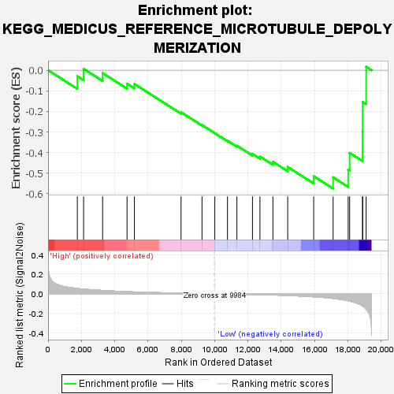
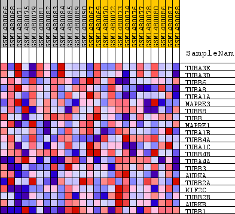
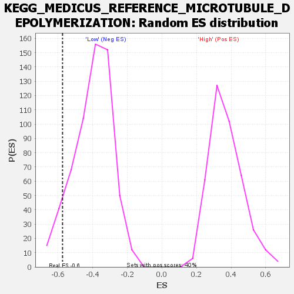

| Dataset | WG6v3.CPT1A.cls#High_versus_Low.CPT1A.cls#High_versus_Low_repos |
| Phenotype | CPT1A.cls#High_versus_Low_repos |
| Upregulated in class | Low |
| GeneSet | KEGG_MEDICUS_REFERENCE_MICROTUBULE_DEPOLYMERIZATION |
| Enrichment Score (ES) | -0.57455987 |
| Normalized Enrichment Score (NES) | -1.4420016 |
| Nominal p-value | 0.073578596 |
| FDR q-value | 0.6118012 |
| FWER p-Value | 0.999 |

| SYMBOL | TITLE | RANK IN GENE LIST | RANK METRIC SCORE | RUNNING ES | CORE ENRICHMENT | |
|---|---|---|---|---|---|---|
| 1 | TUBA3E | TUBA3E | 1757 | 0.053 | -0.0288 | No |
| 2 | TUBA3D | TUBA3D | 2133 | 0.047 | 0.0065 | No |
| 3 | TUBB6 | TUBB6 | 3275 | 0.033 | -0.0140 | No |
| 4 | TUBA8 | TUBA8 | 4742 | 0.021 | -0.0652 | No |
| 5 | TUBA1A | TUBA1A | 5185 | 0.018 | -0.0669 | No |
| 6 | MAPRE3 | MAPRE3 | 7985 | 0.006 | -0.2041 | No |
| 7 | TUBB8 | TUBB8 | 9243 | 0.002 | -0.2663 | No |
| 8 | TUBB | TUBB | 10012 | -0.000 | -0.3058 | No |
| 9 | MAPRE1 | MAPRE1 | 10774 | -0.002 | -0.3422 | No |
| 10 | TUBA1B | TUBA1B | 11339 | -0.004 | -0.3664 | No |
| 11 | TUBB4A | TUBB4A | 12274 | -0.007 | -0.4062 | No |
| 12 | TUBA1C | TUBA1C | 12722 | -0.009 | -0.4190 | No |
| 13 | TUBB4B | TUBB4B | 13501 | -0.013 | -0.4446 | No |
| 14 | TUBA4A | TUBA4A | 14389 | -0.018 | -0.4698 | No |
| 15 | TUBB3 | TUBB3 | 15950 | -0.031 | -0.5145 | No |
| 16 | AURKA | AURKA | 17116 | -0.047 | -0.5198 | Yes |
| 17 | TUBB2A | TUBB2A | 18020 | -0.072 | -0.4836 | Yes |
| 18 | KIF2C | KIF2C | 18109 | -0.075 | -0.4014 | Yes |
| 19 | TUBB2B | TUBB2B | 18882 | -0.124 | -0.2976 | Yes |
| 20 | AURKB | AURKB | 18889 | -0.125 | -0.1538 | Yes |
| 21 | TUBB1 | TUBB1 | 19099 | -0.157 | 0.0166 | Yes |

